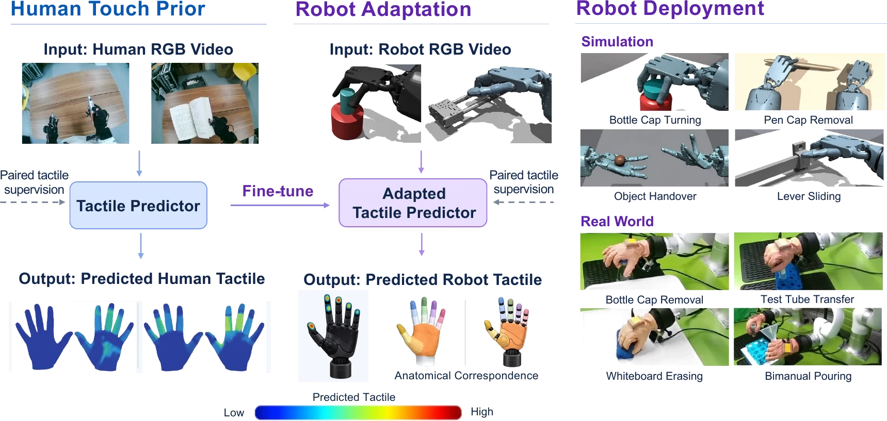
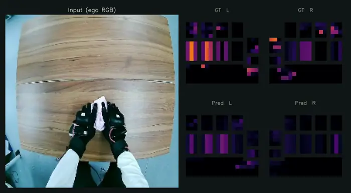
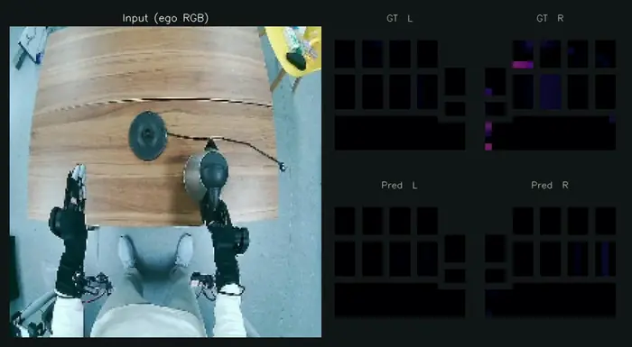
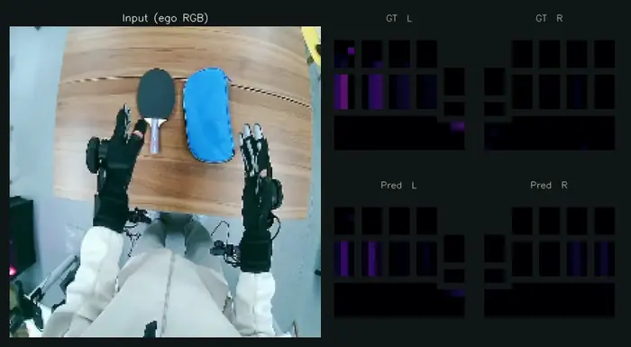

Ego2Contact
Predicting Touch from Egocentric Human Video for Contact-Rich Robot Manipulation

Contact locations and interaction forces are critical for contact-rich robot manipulation but are often ambiguous from vision alone. Measuring them on robots requires specialized tactile hardware and platform-specific data collection, which keeps robot tactile data scarce. Human egocentric video is far easier to scale but does not capture tactile information. Recent predictors trained on egocentric recordings paired with tactile-glove measurements can predict this missing signal from video alone. These predictors, however, remain confined to human hands, which differ from robot hands in appearance and tactile layout. We present Ego2Contact, which learns a visual–tactile prior from human interactions and transfers it to robot hands. Its predictor fuses temporal scene context with hand-local visual features to infer bimanual tactile fields from RGB video. Anatomical region correspondences align varying robot tactile layouts with the predictor's canonical grid, turning robot measurements into fine-tuning targets and predictions into policy inputs. Ego2Contact outperforms prior tactile predictors on human data, and on robot data after adaptation. The adapted predictor provides tactile inputs for both simulated reinforcement learning and real-robot policy post-training. Compared with training without tactile, predicted touch increases average success from 44.4% to 48.5% in simulation and from 27.5% to 45.0% on real robots, recovering part of the benefit of measured tactile. Human-learned tactile priors can thus supply touch when direct tactile sensing is limited.
Overview Video
Ego2Contact in 30 seconds: a tactile predictor learned from human egocentric video is adapted to robot hands and supplies touch for policy learning in simulation and on a real robot (no sound, on-screen captions).
Predicting Touch from Human Video
The predictor fuses temporal scene context with hand-local visual features to infer bimanual pressure fields from egocentric RGB video, and outperforms the TouchAnything baseline on seen and unseen objects of EgoTouch.
Click a clip to enlarge it. Each clip shows the RGB input on the left and the 21×21 pressure grids of both hands on the right: ground truth on top, prediction below.

▶ Wring towel
▶ Boil water with kettle
▶ Put back ping-pong paddleAdapting the Predictor to Robot Hands
The predictor is fine-tuned on paired RGB and contact forces from simulated robot rollouts through anatomical region correspondences. Browse ground truth vs. prediction on held-out episodes of the four simulated tasks: the 21×21 canonical grid, the hand surface, and the 17 link regions consumed by the RL policy. Values are normalised per task and clipped to [0, 1].
Simulation: Predicted Touch for Reinforcement Learning
Predicted touch serves as a virtual tactile sensor for PPO policies on four contact-rich dexterous tasks in Isaac Gym. Policies observe proprioception alone, or additionally online predicted or ground-truth tactile (17 pressure values and 17 contact flags per hand). Predicted tactile improves success on three of the four tasks and approaches ground-truth tactile on bottle cap turning.
| Task | Proprio only | + Predicted tactile | + GT tactile |
|---|---|---|---|
| Pen cap removal | 0.0 | 1.0 | 95.0 |
| Lever sliding | 84.0 | 88.8 | 98.2 |
| Bottle cap turning | 64.1 | 71.0 | 74.1 |
| Bimanual handover | 29.3 | 33.1 | 49.1 |
| Average | 44.4 | 48.5 | 79.1 |
Success rate (%), averaged over 4 seeds. The four task clips are successful executions from the episodes collected for predictor adaptation.
1 built on Bi-DexHands
2 adapted from the VTDexManip simulator
Real-Robot Experiments
A dexterous hand wearing an 880-taxel tactile glove, with a head camera and a wrist camera. Demonstrations are collected by VR teleoperation; the adapted predictor annotates them with tactile images for post-training a vision-language-action policy.
Post-training uses no tactile, predicted tactile (ours) or measured tactile; every policy runs with the glove's measured tactile. The clips are rollouts of the policies post-trained with predicted tactile (head camera, wrist camera inset).
| Task | No tactile | Predicted tactile | Measured tactile |
|---|---|---|---|
| Bottle cap removal | 5/10 | 7/10 | 7/10 |
| Test tube transfer | 3/10 | 5/10 | 6/10 |
| Whiteboard erasing | 2/10 | 3/10 | 4/10 |
| Bimanual pouring | 1/10 | 3/10 | 5/10 |
| Average success | 27.5% | 45.0% | 55.0% |
Code
Paper
arXiv preprint, 2026: arXiv:2610.22932 [cs.RO]
Ego2Contact: Predicting Touch from Egocentric Human Video for Contact-Rich Robot Manipulation
Qianqian Yang, Dayou Li, Bangya Liu, Zihao Zhu, Nuo Chen, Siyuan Xu, Hezhen Hu, Chen Yu, Rebecca Friesen, Minghui Zheng, Cynthia Hipwell, Xiaoning Qian, Kenji Shimada, Zhiwen Fan
Bibtex
@article{yang2026ego2contact,
title = {Ego2Contact: Predicting Touch from Egocentric Human Video for Contact-Rich Robot Manipulation},
author = {Yang, Qianqian and Li, Dayou and Liu, Bangya and Zhu, Zihao and Chen, Nuo and Xu, Siyuan and Hu, Hezhen and Yu, Chen and Friesen, Rebecca and Zheng, Minghui and Hipwell, Cynthia and Qian, Xiaoning and Shimada, Kenji and Fan, Zhiwen},
journal = {arXiv preprint arXiv:2610.22932},
year = {2026}
}
Team
† Corresponding author
Contact
If you have any questions, please feel free to contact Zhiwen Fan (zhiwenfan@tamu.edu).